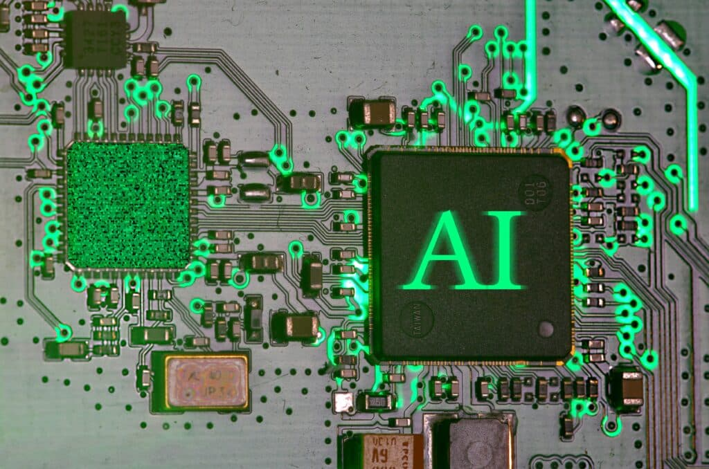
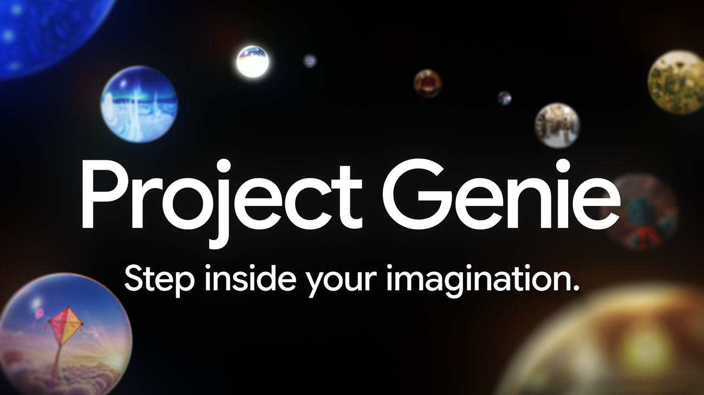

The front page, read closely and set in type — a briefing for Keegan
Compiled from news.ycombinator.comWednesday, November 18, 2026Every fact checked; every joke earned
SecurityNGINX, patched todayTwo unauthenticated remote-code-execution flaws rated 9.2 under CVSS 4.0, one of them shipping since 2015; fixed builds landed within half an hour of disclosure.
Investigations15 million filesThe Inside Deutsche Bank leak spans sanctions monitoring, internal audit and the units that decide whether risky clients stay or go.
AI DeskNine models in one dayMicrosoft ships seven at Ignite; Google answers with Genie 4 and Gemini 4 Neon. The thread doubts the comparisons.
Language‘Human’, 2026Cambridge Dictionary’s Word of the Year, defined against “gods, animals, or machines.”
Security
Two unauthenticated RCE flaws in NGINX patched on disclosure day
Five research teams independently found the twin HTTP/2 bugs, both rated 9.2 critical; one has shipped in default configurations since NGINX 1.9.5 in 2015, and the software fronts more than 225 million websites
Security Desk★ 901 pts · 389 comments
Header image accompanying the Wiz disclosure. wiz.io
NEW YORK — Wiz Research, joined independently by Ikotas Labs, Metnir, Rapid7 and Xint, disclosed two unauthenticated remote-code-execution vulnerabilities in NGINX on Wednesday: CVE-2026-123633, a use-after-free in HTTP/2 connection handling, and CVE-2026-123007, an integer underflow in HTTP/2 flow control, both scored 9.2 (critical) under CVSS 4.0 and both requiring only that HTTP/2 be enabled.[1] F5, which maintains NGINX, shipped fixed releases within the hour — 1.30.7 stable and 1.31.9 mainline — in a security release covering ten vulnerabilities, including a third 9.2-rated use-after-free, this one in HTTP/3 (CVE-2026-121810).[1]
The two flaws work differently and bite different setups. The use-after-free, present since NGINX 1.19.7, affects reverse-proxy deployments when available connection slots run low: a partially sent HEADERS frame leaves the connection marked reusable while a request is being created on it. The integer underflow, present since NGINX 1.9.5 in 2015, skews flow-control accounting into an invalid memory copy, and Wiz demonstrated code execution on a 64-bit server doing nothing but serving static files over HTTPS — no backend application, no third-party modules, default configuration.[1] Memory-safety mitigations such as ASLR do not stop either, since both allow memory reads before code execution; where upgrading must wait, Wiz’s interim fix is to turn HTTP/2 off (http2 off;) and reload.[1]
The disclosure’s other finding is about who finds such bugs now. Wiz says it located both flaws with Wiz Atlas, its AI code-scanning harness, and validated the impact of each with Gemini 4 Carbon and ChatGPT 5.6 Sol, concluding that “complexity can no longer be relied upon as a barrier to discovery or exploitation.”[1] The thread worked the practical angles: one reader timed the patched releases to “within 30 mins” of the post going up;[2] another asked whether five independent teams hitting the same two bugs “is some kind of record for bug collision”;[2] a third, running no HTTP/2 at all, kept to the sidelines — “Glad I’m http/1.1 only.”[2]
Continued in the thread · news.ycombinator.com/item?id=50547374
Infrastructure
Quad9 will stop resolving for France on November 24, under €1,000 a day
Infrastructure Desk★ 518 pts · 180 cmts
Article cover image. techstackups.com
On Tuesday, November 24, Quad9 — the Swiss non-profit behind the free 9.9.9.9 resolver — stops answering DNS queries from France. A Paris court imposed a €1,000-a-day penalty on October 21 (docket RG 26/11882) after the resolver refused to block pirate sports-streaming domains for beIN Sports; the broadcaster had asked for €10,000 a day per domain, €580,000 a day across 58 domains, and with about 20 similar cases pending in France, Quad9 says leaving is the only option it can afford.[3] This paper carried the withdrawal itself from Cloudflare’s post this morning; the new long-form piece supplies the legal arithmetic behind it.
Who loses service is the piece’s sharpest point: Quad9’s announcement lists French networks it serves — the interministerial digital directorate DINUM, the CEA, the Institut Pasteur, RENATER, EDF, SNCF, Marseille’s AP-HM hospitals, Thales — and because the resolver keeps no user records, it has no way to warn them. In Cloudflare’s words, users will see no error message: “Their Internet will simply stop working.”[3] The thread’s sharpest dissent came from a reader who argued that Quad9’s call for reasoned letters to policymakers misreads the matter: “Judges and lawmakers didn’t do this because they misunderstood some technology issue.”[4]
Investigations
A leak of 15 million files puts Deutsche Bank’s controls on public display
Investigations Desk★ 453 pts · 155 cmts
Cover photograph from the project site. inside-db.com
A new hub site, Inside Deutsche Bank, presents a global investigation built on a leak of more than 15 million files, spanning what it calls the bank’s “anti-financial crime, sanctions monitoring, internal auditing and the units responsible for deciding whether risky clients stay or go” — with partner stories running in the Financial Times, the New York Times, Malaysiakini and eight other outlets.[5]
The partners carry the specifics: Deutsche Bank facilitated at least 24 transactions totalling €172.98 million linked to the fugitive financier Jho Low (Malaysiakini); leaked files show suspicious Epstein-related payments of $600 million, double the previously known figure (KCIJ Newstapa); and an analyst’s note — “As you know we have a large Russian Oligarchs client population” — written as the bank braced for sanctions (New York Times).[5] The thread reached for the wider record, one reader citing David Enrich’s 2020 book Dark Towers, and another asking how the cases square with Germany’s regulatory reputation.[6]
The Day’s Other Leads
AI Desk · Big Tech
Microsoft releases seven models, pitched on price against GPT-6 and Opus
AI Desk★ 366 pts · 246 cmts
Header image from the announcement post. microsoft.ai
At Ignite, Microsoft’s MAI unit released seven models in a single post, each framed by price. MAI Code 2 claims 98% of GPT-6.1 Sol’s coding quality at about 40% of the price, and 96% of Opus 5.5’s performance for 5%; MAI Cyber 2 Flash claims to beat GPT-6 Astra’s quality at under 2% of the cost per task on the CyberGym-E2E benchmark; MAI Realtime 1 starts at $0.01 per audio minute; and Dragon Copilot Transcribe, built on MAI Transcribe 2, already processes 10 million patient encounters a month with multilingual error rates halved.[7] A second-generation accelerator, Maia 200, enters production at a claimed 1.7x more tokens per watt.[7]
The commentariat went at the comparisons first. “‘Decision 1.1 is the latest decision model from Microsoft, 50x faster and 79x cheaper than GPT-6.1 Sol’… uhm okay. What a useless comparison,” wrote the top-rated comment;[8] others asked why the models are absent from the Artificial Analysis index, summed the release up as “weak models, closed weights, no technical information,” and argued Microsoft needs open weights to win share — “Otherwise, it’s Windows Phone OS all over again.”[8]
Language Desk
Cambridge Dictionary names ‘human’ its Word of the Year for 2026
Language Desk★ 203 pts · 156 cmts
The choice marks a year “defined by global debates on what it means to be human when AI is blurring the boundaries between people and machines” — and the dictionary’s own definition of the word sets it against “gods, animals, or machines.”[13] The release collects the year’s landmarks: Bill Gates’ case for “human reserved jobs” such as caregivers (“The measure of AI’s success should be how much it improves human lives”); Geoffrey Hinton’s “we’re creating alien beings. I’m willing to be selfish and choose humans”; and Pope Leo XIV’s warning against new forms of “dehumanization.”[13]
The arts supplied the countermovement the release catalogs: the Human Artistry Campaign’s artists against machine-generated replicas, the Authors Guild’s “Human Authored” kitemark, and Matthew McConaughey becoming the first Hollywood actor to pre-emptively trademark his voice, face and catchphrase against unauthorized digital reproduction, with Taylor Swift following in April.[13] In the thread, the most-replied comment took on the Gates proposal: deciding which jobs stay human “hinges on personal preferences, class interests, and even market pressures… It’s not something that can be reasoned about on a global scale.”[14]
No image obtained · sourced from the university release and thread
Science Desk
Energy-based reasoners hit 99.9% on Sudoku-Extreme with 345× less compute
Science Desk★ 291 pts · 48 cmts
Project-page figure: correct solutions settle at low-energy states. energy-based-reasoners.github.io
A paper posted this week replaces the learned recurrent step of looped reasoners with gradient descent on a single learned energy function: the energy scores how well a candidate answer fits the puzzle, its gradient says how to improve it, and the gradient’s size decides when to stop — easy puzzles finish in a few steps, hard ones keep going.[9] Across four algorithmic benchmarks the authors report 99.9% single-sample accuracy on Sudoku-Extreme using 345× fewer inference FLOPs than the next-best model, with 1.8 million parameters against rivals’ 5–10 million, and five samples matching what the strongest baseline needs 128 samples to find.[9]
Readers stressed the domain: this is “energy-based search for a discrete problem (graph coloring, solving mazes, sudoku),” one wrote — constrained rules, few solutions — and it would be interesting to see it on chess or Go.[10] Another flagged the definitional drift: the headline efficiency comes “for a very generous definition of reasoning, that has almost nothing in common with the thing most people associate with the term nowadays.”[10] A third pointed to Logical Intelligence, the energy-model group that counts Yann LeCun, for where the approach already troubles LLMs — “primary school level maths and counting.”[10]
Security & Practical
Security Briefing
Linux KVM bug let a guest keep running on a stale MMU context
Security Desk★ 154 pts · 108 cmts
CVE-2026-99312, published Wednesday in the Linux kernel record, describes a nested-virtualization flaw: when KVM emulates an INIT while a nested guest (L2) is running with paging disabled, the kernel can keep running the parent guest (L1) on a stale memory-management-unit context. The fix makes the MMU reset unconditional on INIT; the bug affects nested SVM only, since INIT is an unconditional intercept under VMX, and stable fixes are marked in kernel releases 6.12.118, 6.18.64 and 7.3.5.[15]
The thread’s advice for operators was blunt and contested. “Another nested KVM bug… we’ve gotten at least 2 more nested KVM escapes in the last year. Don’t allow nested KVM,” wrote one reader;[16] another cautioned against disabling it — nested virtualization “is still better security than everything else” — while noting that the write-up circulating with the record “is AI-written. It really should be rewritten by a human.”[16]
cve.org served an empty page to this newsroom; sourced from the CVE Program record and the thread
Field Desk · Professional Services
In KPMG’s 100-agent audit trial, the AI sometimes dug deeper than the team
Field Desk★ 247 pts · 120 cmts

Header image (the site’s alt text reads “kpmg”). europeanbusinessmagazine.com
LONDON — In “Project Exponential,” KPMG UK set more than 100 AI agents on the financial statements of an unnamed FTSE 250 company, working alongside a conventional audit team across the whole process — collecting evidence, analyzing and documenting data, drafting conclusions and proposing next steps, and dividing responsibilities among themselves. Head of audit Cath Burnet said the technology had, in several instances, gone considerably deeper than the regular team, “identifying areas requiring further investigation and asking questions that human auditors had not necessarily raised.”[11]
The caveats are material. The four-month exercise was not a statutory audit — a partner signed off on the experiment, but its findings were not used to approve the accounts — and an auditor had to intervene when one agent failed to match regulatory requirements with the company’s documentation. KPMG plans to expand to as many as 20 larger audits, concedes the technology is not ready for thousands of engagements, and has not said whether efficiencies will lower audit fees; the UK’s Financial Reporting Council warns AI must not undermine auditor independence or professional scepticism.[11] The thread supplied both readings: “I suspect this says more about KPMG accountants than AI,” one reader wrote; another, citing decades of accounting scandals, asked whether better questions help in a business where audits are “too often a cut-rate whitewashing exercise.”[12]
“We’re creating alien beings. I’m willing to be selfish and choose humans.”Geoffrey Hinton, in Cambridge’s Word of the Year release · [13]
Classifieds — Rates: 1 Karma per line
PUBLIC NOTICE: Quad9 (9.9.9.9) stops answering French queries November 24; holders of dependent networks, hospitals included, will not be notified. [3]
WORLDS FOR BUILDING, editable mid-session, native audio included — Ultra subscription or waitlist. Inquire within. Google DeepMind. [17]
Late Wire — AI Desk
AI Desk · World Models
Genie 4 reaches Project Genie, with mid-session editing and native audio
AI Desk★ 142 pts · 118 cmts

Announcement thumbnail for Project Genie. blog.google
Google DeepMind rolled out Genie 4, its most interactive world model yet, to eligible Google AI Ultra subscribers: type a prompt mid-session and the world changes — the weather, the characters, the direction of the action — with native audio that adapts as the scene unfolds, a first for the line. A conversational “Project Genie agent” builds worlds from plain descriptions, and a new community gallery lets users publish, explore and remix them.[17]
Genie 3 stays in the model picker for longer runs and gains three-minute sessions, up from 60 seconds, world chaining, and 360-degree panorama seeding.[17] The thread’s reservations were about access and about worth: “So now we’re allowed to pay to use a beta? I’m good,” one reader wrote; another called world models “such an insane waste of resources” next to looking up a panorama.[18]
AI Desk
Gemini 4 Neon posts #3 on Artificial Analysis at $3 per million tokens
AI Desk★ 132 pts · 90 cmts
Blog-header image from the announcement. blog.google
Also Wednesday, Google introduced Gemini 4 Neon, a frontier-class model priced at $3 per million input tokens and $15 per million output, with cached input at $0.15 — a 95% discount — and a one-million-token context window. Google reports it #3 overall on the Artificial Analysis Intelligence Index (score 61 at its xhigh thinking level), #1 on the Artificial Analysis Coding Agent Index (58.6), #1 on the Legal Research Bench and Tax Agent Bench, and #1 on Vending-Bench 2, a long-horizon business simulation, with the company’s lowest fabrication rate yet in internal testing.[19]
Its orchestration role is the quieter headline: Neon is built to sustain long, tool-heavy agent sessions and to act as a fast “Orchestrator” directing parallel Hydrogen subagents in Google Antigravity, handling context compaction along the way.[19] Readers kept score of the cadence — “Google is on a roll, what is this the 4th release this month?” — and of the naming: “Credit to Google for outdoing OpenAI and Anthropic in terms of choosing a confusing naming convention.”[20] One judged it “the long awaited successor to 3.1 pro.”[20]
The Day by the Numbers
Front-page candidates at snapshot
30
Model releases announced today
9
NGINX CVEs fixed in today’s release
10
…of those rated 9.2 critical
3
Gemini 4 Neon, per M input tokens
$3
Gemini 4 Neon, per M output tokens
$15
Genie sessions, up from 60 seconds
180 s
Quad9 in France, by the Numbers
Court penalty from Oct 21
€1,000/day
beIN’s request (58 domains)
€580,000/day
Similar cases pending
~20
Resolver goes dark in France
Nov 24
Box Score · Points per Story
The day in one line: a decade-old NGINX flaw patched at 9.2 on disclosure day; 15 million bank files on public display; nine models from two firms before dinner; and the dictionary’s word for the year of it all — “human.”
Front Page Ledger
Stories typeset
10
Fresh stories
10
Follow-ups
0
Carried in digest
0
Combined points
3,407
Combined comments
1,610
Most-discussed
NGINX RCE (389)
Security desk share
1,055 pts · 497 cmts
AI desks share
931 pts · 502 cmts
Corrections & Clarifications
385×, or 345×. The front-page title bills “385x more efficient inference.” The project page reports 345× fewer FLOPs than the next-best model on Sudoku-Extreme, and elsewhere 7× fewer iterations and 43× fewer samples to match that model’s best accuracy. The extra 40× is not in the release.[9]
Seven models, and one accelerator. Microsoft’s “seven new models” is a count of models; Maia 200, announced in the same post, is hardware. The pricing claims are per-benchmark comparisons of Microsoft’s choosing — Decision 1.1’s “50x faster and 79x cheaper” sets a purpose-built decision model against the general-purpose GPT-6.1 Sol, and the post publishes no underlying runs.[7]
“Better questions” — sometimes. The magazine’s headline drops the trial’s own qualifier: the agents “sometimes” went deeper, on one unnamed FTSE 250 company, in a non-statutory exercise that needed a human correction mid-run; the underlying reporting is the Financial Times’.[11]
Word of the Year is an editorial pick. Cambridge describes a year “defined by global debates” in choosing ‘human’; the selection marks 2026’s arguments rather than any measured spike in lookups or usage.[13]
Publisher’s Note
All ten stories in this edition are fresh — no follow-ups qualified and no digest was needed. The page spent its day on two NGINX flaws patched within half an hour of disclosure, a 15-million-file look inside Deutsche Bank, and nine model releases from Microsoft and Google, while Cambridge’s lexicographers closed the circle by naming “human.” One record page at cve.org would not load for this newsroom; the CVE Program’s own data stood in.
— The Herald
Wiz Research, “Unauthenticated Remote Code Execution in NGINX: CVE-2026-123633 and CVE-2026-123007” — wiz.io
Methodology: snapshot of the Hacker News front page taken at 22:00 UTC on Wednesday, November 18, 2026, via the Algolia HN Search API (tags=front_page; 30 candidates returned). Points and comment counts are frozen at the snapshot and move afterwards. Deduplicated by story id against the previous four editions (manifest.json): all ten stories are fresh to this edition; no story met the follow-up threshold and no digest was required. Articles were fetched at publication time; cve.org returned an application shell, so CVE-2026-99312 is sourced from the CVE Program’s record. Images are the stories’ own header images, credited to their hosts; no image was fabricated. Corrections & Clarifications items are drawn from today’s stories only.